Muncher
These instructions will take you through the steps of creating a game that uses the 1980 game Pac-Man as its inspiration. In this version, the ghosts are not constrained by walls so can float through them.
You will control Muncher, moving him around the screen to collect all the pellets whilst avoiding being caught by the ghosts.
Eat a power pellet to super charge Muncher and allow him to eat the ghosts.
When fruit appears, munch them for a big bonus.
Get a new life for each 10,000 points scored.
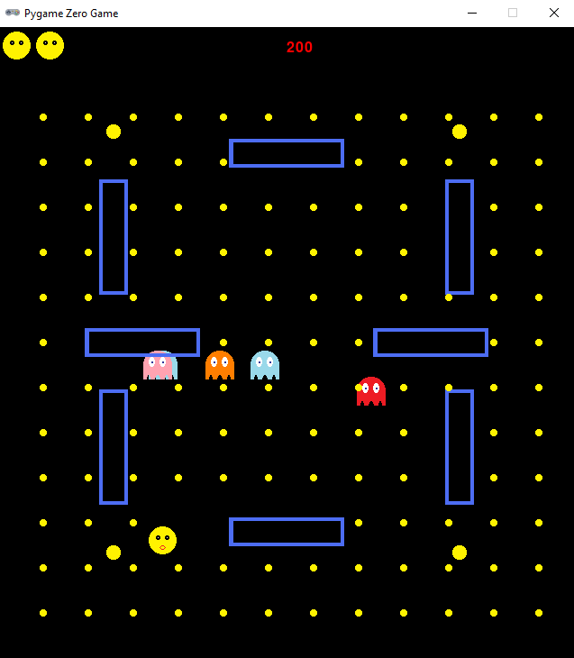
Learning points
These instructions will take you through the process of creating a game which uses the fundamental PyGame Zero classes with fundamental Python code concepts including:
- variables
- lists
- functions
- if/else conditions
- loops
Some techniques are introduced that demonstrate introspection of Python objects as well as how to attach additional functionality to existing Actors.
These instructions are suitable for you if you are comfortable with basic Python coding.
Step 0: Create the project in Replit
Navigate to Replit and login.
Create a new project using the Pygame template and give it the title "Muncher" as illustrated by the screenshot below.
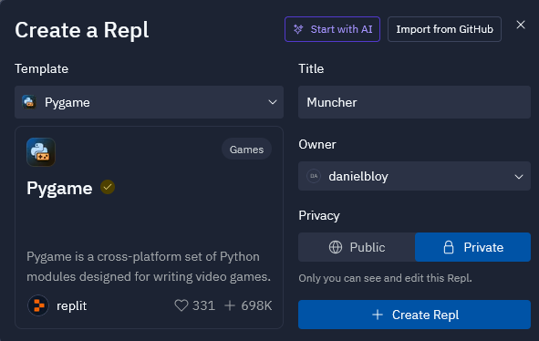
In the main.py file, replace the code provided with the code below and run the
program to make sure it can download the packages and runs. You should be presented
with a black screen with a red zero for the score at the top of the screen.
import time
import pgzrun
import types
WIDTH = 640
HEIGHT = 700
score = 0
lives = 3
paused = False
def draw():
screen.clear()
screen.draw.text(f"{score}", (WIDTH / 2, 15), color="red", fontsize=24)
pgzrun.go()
Step 1: Introducing Muncher
Our protagonist is called Muncher and is a yellow round ball that likes to eat little yellow pellets. Muncher will be comtrolled by the player and can be moved around the screen using the cursor keys. Muncher will be 32 x 32 pixels in size and will be animated. Therefore you will need at least 2 images for Muncher. You can create your own images using a paint program that supports transparency (all the images provided here were created using PixilArt) or you can use my images that are provided below.
The two images should be called muncher.png and muncher2.png. Create a images folder in
your project and place your files in there as illustrated in the screenshot below.
muncher.png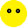muncher2.png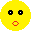
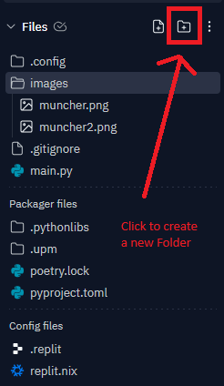
Then add the following code before the draw() function:
MUNCHER_START_X = WIDTH / 2
MUNCHER_START_Y = (HEIGHT / 4) * 3
muncher = Actor('muncher', (MUNCHER_START_X, MUNCHER_START_Y))
muncher.images = ['muncher', 'muncher2']
muncher.vx = 150
muncher.vy = 150
Then change the draw() function to read as follows to ensure Muncher gets
drawn each frame:
def draw():
screen.clear()
screen.draw.text(f"{score}", (WIDTH / 2, 15), color="red", fontsize=24)
muncher.draw()
To add movement for Muncher, add an update() function after the draw() function. The
update() function will move Muncher up, down, left or right at the correct speed (using
Munchers horixontal and vertical velocity properties in pixels per second multiplied by the
proportion of seconds that have passed since the last update):
def update(dt):
if keyboard.left:
muncher.x -= muncher.vx * dt
if keyboard.right:
muncher.x += muncher.vx * dt
if keyboard.up:
muncher.y -= muncher.vy * dt
if keyboard.down:
muncher.y += muncher.vy * dt
Try out your game. You should be able to move Muncher around the screen.
Experiment: Changing the speed of Muncher
The speed of Muncher is controlled by the vx and vy properties that represent the horizontal
and vertical speed that Muncher can move in pixels per second. These are currently set to 150
each in your code. Try experimenting with different values to see what effect this has. Example
values to try are:
- 300
- 50
- 0
- -150
Step 2: Keeping Actors within the screen
What happens when Muncher gets close to the edges of the screen? Does he stop or keep going so he goes outside the bounds of the screen?
During the game, we want Muncher to stay within the play area. We are therefore going to need to
to set some boundaries that we want to keep all Actors (ghosts and Muncher) within. This boundary
will be set to a border of 50 pixels. We will add a keep_in_bounds() method to the Actor
class which we can call in each update() call. Add the following code above your draw()
function:
BOUNDS_X1 = 50
BOUNDS_Y1 = 50
BOUNDS_X2 = WIDTH - BOUNDS_X1
BOUNDS_Y2 = HEIGHT - BOUNDS_Y1
def keep_in_bounds(actor):
if actor.x < BOUNDS_X1:
actor.x = BOUNDS_X1
elif actor.x > BOUNDS_X2:
actor.x = BOUNDS_X2
if actor.y < BOUNDS_Y1:
actor.y = BOUNDS_Y1
elif actor.y > BOUNDS_Y2:
actor.y = BOUNDS_Y2
Actor.keep_in_bounds = keep_in_bounds
Then add muncher.keep_in_bounds() to the end of your update() function so it reads as follows:
def update(dt):
if keyboard.left:
muncher.x -= muncher.vx * dt
if keyboard.right:
muncher.x += muncher.vx * dt
if keyboard.up:
muncher.y -= muncher.vy * dt
if keyboard.down:
muncher.y += muncher.vy * dt
muncher.keep_in_bounds()
Try out your game. You should be able to move Muncher around the screen but cannot go outside the bounds.
Experiment: Changing the bounds
The variables BOUNDS_X1 and BOUNDS_Y1 set the width of the border around the screen.
Try using diffent values and see how it changes the playing area. Example values to try are:
- 0
- 250
- -50
Explanation: Why is Muncher faster when moving diagonally?
Muncher has two properties that are used to determine his velocity: vx and vy. These represent the
horizontal and vertical velocity that Muncher moves. If moving just left or right, the speed of
Muncher is the value of the vx parameter, in this case 150 pixels per second. If moving just up or
down, the speed of Muncher is the value of the vx parameter, again 150 pixels per second. However,
if Muncher moves diagonally, he Moves 150 pixels left or right AND 150 pixels up or down. This is
a right angled triangle and pythagoras theorem can be used to determine the distance actually moved
which is about 212 pixels. A move consistent movement speed could be implemented by testing whether
Muncher is moving diagonally or not but that would complicate the move calculation code. Besides,
having a slightly faster diagonal move speed adds an additional strategy to the game and is a fun
side effect.
Step 3: Animating Actors
We want all of our Actors to be animated. At present, as Muncher runs around the screen he looks a
little boring. In the code that creates the Muncher Actor, we set an images property that
contained the two images that we are going to use to animate Muncher.
Above your draw() function, add the following code which adds an animate() method to the Actor
class. This method first checks for the presence of some properties on the Actor instance and if
not present, provides some default values.
def animate(actor):
if not hasattr(actor, "images"):
return
if not hasattr(actor, "fps"):
actor.fps = 5
if not hasattr(actor, "next_frame"):
actor.next_frame = time.time_ns()
if not hasattr(actor, "frame"):
actor.frame = 0
now = time.time_ns()
if now > actor.next_frame:
actor.frame = (actor.frame + 1) % len(actor.images)
actor.image = actor.images[actor.frame]
while actor.next_frame < now:
actor.next_frame += (1_000_000_000 / actor.fps)
Actor.animate = animate
Modify your draw() function to call the animate() method of Muncher. Your new draw()
function will look like this:
def draw():
screen.clear()
screen.draw.text(f"{score}", (WIDTH / 2, 15), color="red", fontsize=24)
muncher.animate()
muncher.draw()
Extension: More complex animations
If you want to make more elaborate or complex animations, you can add more images to
the images property of an Actor. For example, if you have an animation that spans
4 frames, you can change the images property of Muncher to read as follows:
muncher.images = ['muncher', 'muncher2', 'muncher3', 'muncher4']
Experiment: Animation speed
You can also adjust the speed with which Muncher is animated by providing a value
for the fps property on Muncher. By default, this will be set to 5 fps (Frames
Per Second). Try experimenting with different values by adding the following code
immediately after you set the vx and vy properties of Muncher:
muncher.fps = 15
Try experimenting with different values. Examples to try are:
- 1
- 2
- 15
Step 4: Drawing lives
In this game, Muncher will start with 3 lives. We should add an indicator to the top of
the screen to indicate how many lives Muncher has. Modify your draw() function so that
it looks as follows:
def draw():
screen.clear()
screen.draw.text(f"{score}", (WIDTH / 2, 15), color="red", fontsize=24)
for i in range(lives):
screen.blit('muncher', (5 + (37 * i), 5))
muncher.animate()
muncher.draw()
Step 5: Introducing the ghosts
Muncher is antagonised by four ghosts, Blue, Orange, Red and Pink. Each of the ghosts will be animated so will require at least 2 images. Just like Muncher, all of the ghost images should be 32 x 32 pixels in size. You can create your own images using a paint program that supports transparency (all the images provided here were created using PixilArt) or you can use my images that are provided below.
The images for each ghost should be placed in the images folder you already created and be called:
ghost-blue.png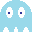ghost-blue2.png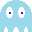ghost-orange.png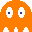ghost-orange2.png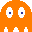ghost-red.pngghost-red2.png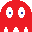ghost-pink.png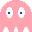ghost-pink2.png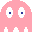
Add the following code before the draw() function which will create the ghosts
and give each one an individual speed and direction to start with but all will have
the same starting position:
GHOST_START_X = WIDTH / 2
GHOST_START_Y = (HEIGHT / 3)
GHOST_START = (GHOST_START_X, GHOST_START_Y)
blue = Actor('ghost-blue', GHOST_START)
blue.images = ['ghost-blue', 'ghost-blue2']
blue.vx = -160
blue.vy = -160
orange = Actor('ghost-orange', GHOST_START)
orange.images = ['ghost-orange', 'ghost-orange2']
orange.vx = 260
orange.vy = 60
red = Actor('ghost-red', GHOST_START)
red.images = ['ghost-red', 'ghost-red2']
red.vx = 40
red.vy = 280
pink = Actor('ghost-pink', GHOST_START)
pink.images = ['ghost-pink', 'ghost-pink2']
pink.vx = 60
pink.vy = 60
ghosts = [blue, orange, red, pink]
Then change the draw() function to read as follows to ensure the ghosts all get
animated and drawn each frame:
def draw():
screen.clear()
screen.draw.text(f"{score}", (WIDTH / 2, 15), color="red", fontsize=24)
for i in range(lives):
screen.blit('muncher', (5 + (37 * i), 5))
muncher.animate()
muncher.draw()
for ghost in ghosts:
ghost.animate()
ghost.draw()
Run your program and see what happens? do the ghosts move? Why do you think this is?
Extension: More complex ghost animations
Just as you can for Muncher, you can make more elaborate or complex animations for the
ghosts through using more animation frames by changing the images property of an Actor.
For example, if you have an animation that spans 5 frames that you want to use for the
blue ghost, you can change the images property of blue to read as follows:
blue.images = ['ghost-blue', 'ghost-blue2', 'ghost-blue3', 'ghost-blue4', 'ghost-blue5']
Step 6: Moving the ghosts
It looks like there is only a single ghost on the screen because they are all on top
of each other and there is no code that does movement for the ghosts yet. The technique
used for moving the ghosts is exactly the same as that for Muncher. We modify the ghosts
position by its vx and vy properties based on the elaspsed time since the ghost
was last moved.
Add the following code above your draw() function:
def ghost_move(ghost, dt):
ghost.x += ghost.vx * dt
ghost.y += ghost.vy * dt
for ghost in ghosts:
ghost.move = types.MethodType(ghost_move, ghost)
Then modify the update function so that it calls the move() method for each of the
ghosts in turn.
def update(dt):
if keyboard.left:
muncher.x -= muncher.vx * dt
if keyboard.right:
muncher.x += muncher.vx * dt
if keyboard.up:
muncher.y -= muncher.vy * dt
if keyboard.down:
muncher.y += muncher.vy * dt
muncher.keep_in_bounds()
for ghost in ghosts:
ghost.move(dt)
Run your program and see what happens. Do the ghosts stay in the play area like Muncher does? Why do you think this is? Can you fix it?
Experiment: Changing the ghosts speed and direction
Just as it is for Muncher, the speed of the ghosts is controlled by the vx and vy properties
that represent the horizontal and vertical speed each ghost can move in pixels per second.
Each ghost has a different set of values for the vx and vy properties. Experiment with changing
the values to see what effect it has.
Step 7: Keeping the ghosts in bounds
The reason the ghosts all fly off the screen is because we do not perform the check to keep them
within the play area bounds like we do for Muncher. The code in the update() function is missing
a call to ghost.keep_in_bounds().
Modify your update() function so that is is as follows:
def update(dt):
if keyboard.left:
muncher.x -= muncher.vx * dt
if keyboard.right:
muncher.x += muncher.vx * dt
if keyboard.up:
muncher.y -= muncher.vy * dt
if keyboard.down:
muncher.y += muncher.vy * dt
muncher.keep_in_bounds()
for ghost in ghosts:
ghost.move(dt)
ghost.keep_in_bounds()
What happens why you run your game now? Why do you think this is? How do you think you could go about fixing it?
Experiment: Adding more ghosts
The game uses an Python list to store all of the ghosts in the game. This means that we do
not need to do the movement and bounds checking for each ghost individually by their
variables names pink, blue, orange and red but can instead iterate over all of the
ghosts in a list and perform those operations. This is done in the for ghost in ghosts:
statement in the update() function. The advantage of this method is that we can add more
ghosts to the ghosts lists and they will automatically appear and move on the screen.
Try it. Create another ghost called blue2 (which will use the same images as blue) and
add it to the ghosts lists. Run your game and check that it gets displayed and moves:
blue2 = Actor('ghost-blue', GHOST_START)
blue2.images = ['ghost-blue', 'ghost-blue2']
blue2.vx = -10
blue2.vy = -60
ghosts = [blue, orange, red, pink, blue2]
Create some more ghosts called yellow, mango, barry and dingo. Create some super cool
images and animations for them.
Step 8: Bouncing the ghosts
When the game runs, the ghosts all wizz away and stay within the play area but they eventually all end up stuck in one of the corners. This is because the ghosts never change their direction. What we want to do is make the ghosts bounce at the edges of the play area.
Change the ghost_move() function so that it is as follows:
def ghost_move(ghost, dt):
ghost.x += ghost.vx * dt
ghost.y += ghost.vy * dt
if ghost.x >= BOUNDS_X2:
ghost.x = BOUNDS_X2
ghost.vx *= -1
elif ghost.x <= BOUNDS_X1:
ghost.x = BOUNDS_X1
ghost.vx *= -1
if ghost.y >= BOUNDS_Y2:
ghost.y = BOUNDS_Y2
ghost.vy *= -1
elif ghost.y <= BOUNDS_Y1:
ghost.y = BOUNDS_Y1
ghost.vy *= -1
Run your game and you should now see your ghosts bouncing furiously around the screen.
Step 9: Muncher and ghost collisions
At present, when a ghost collides with Muncher, nothing happens. What we want is for the
collision to result in Muncher losing a life. Once a life is lost, we want a short pause,
then all of the actors to return to their starting positions, another short pause and
then the game to start again. The pauses will be controlled by chaining some function
calls using the Pygame clock class. When all lives are lost, the game will exit().
Add the following two functions before your draw() function:
def unpause():
global paused
paused = False
def reset_actors():
for ghost in ghosts:
ghost.x = GHOST_START_X
ghost.y = GHOST_START_Y
muncher.x = MUNCHER_START_X
muncher.y = MUNCHER_START_Y
if lives <= 0:
exit()
clock.schedule(unpause, 2)
The update() function needs two modifications done to it. The first modification is to
do nothing when the game is paused. This is achieved with the following code at the start
of the update() method:
def update(dt):
global lives, paused
if paused:
return
The second change is to check to see if any of the ghosts have collided with Muncher. This
is achieved by adding the following code to the end of the update() function.
for ghost in ghosts:
if ghost.colliderect(muncher):
lives -= 1
paused = True
clock.schedule(reset_actors, 2)
You entire update() function should now look as follows:
def update(dt):
global lives, paused
if paused:
return
if keyboard.left:
muncher.x -= muncher.vx * dt
if keyboard.right:
muncher.x += muncher.vx * dt
if keyboard.up:
muncher.y -= muncher.vy * dt
if keyboard.down:
muncher.y += muncher.vy * dt
muncher.keep_in_bounds()
for ghost in ghosts:
ghost.move(dt)
ghost.keep_in_bounds()
for ghost in ghosts:
if ghost.colliderect(muncher):
lives -= 1
paused = True
clock.schedule(reset_actors, 2)
Explanation: Why is a collision detected between Muncher and the ghosts when they don't touch?
The collision detection algorithm that is used in this game is a relatively simple one.
The code is checking whether the images of the Actors overlap each other. Those images
are square 32 x 32 pixels but the image of Muncher does not use the entire square because
Muncher is a circle. This means there are "blank" areas that surround Muncher in each corner.
Our collision detection algorithm does not distinguish between the coloured in parts of the
image and the blank areas, considering them all as Muncher. Therefore, it a ghost overlaps
with one of these blank areas, it still registers as a collision. Later projects will look
at implementing more advanced collision detection algorithms that offer higher fidelity.
Step 10: Walls to negotiate
The play area needs some walls to make it more difficult for Muncher to avoid the ghosts. Two different images will be required for the walls. One is 128 x 32 pixels (representing a horizontal wall) and the other is 32 x 128 pixels (representing a vertical wall). You can create your own images using a paint program that supports transparency (all the images provided here were created using PixilArt) or you can use my images that are provided below.
The two images should be called wall.png and wall2.png and placed in the images folder.
wall.pngshould be 128 x 32 pixelswall2.pngshould be 32 x 128 pixels
All wall elements will be created as Actors. Add the following code before your draw()
function:
walls = [
Actor('wall', (WIDTH / 4, HEIGHT / 2)),
Actor('wall', ((WIDTH / 4) * 3, HEIGHT / 2)),
Actor('wall', (WIDTH / 2, HEIGHT / 5)),
Actor('wall', (WIDTH / 2, (HEIGHT / 5) * 4)),
Actor('wall2', (WIDTH / 5, HEIGHT / 3)),
Actor('wall2', ((WIDTH / 5) * 4, HEIGHT / 3)),
Actor('wall2', (WIDTH / 5, (HEIGHT / 3) * 2)),
Actor('wall2', ((WIDTH / 5) * 4, (HEIGHT / 3) * 2)),
]
The draw() function needs to be updated to draw the walls. Add the additional code
to the end of your draw() function which should now look as follows:
def draw():
screen.clear()
screen.draw.text(f"{score}", (WIDTH / 2, 15), color="red", fontsize=24)
for i in range(lives):
screen.blit('muncher', (5 + (37 * i), 5))
muncher.animate()
muncher.draw()
for ghost in ghosts:
ghost.animate()
ghost.draw()
for wall in walls:
wall.draw()
Run your game. What happens when Muncher collides with a wall? Why do you think this is?
Extension: Adding more walls
Try extending your game to add more wall elements to the play area. Experiment with new
images of different sizes to create interesting mazes and shapes. Just make sure to add
all of your new wall elements to the wall list so that they will be displayed.
Step 11: Colliding with walls
We want the ghosts to be able to go through the walls, they are ghosts after all. However, we do not want Muncher to be able to go through the walls. We therefore need to check for collisions between Muncher and wall elements. The collision detection algorithm that we will be using is a relatively simple one that checks for overlaps of the edges of Muncher and the walls but is effective enough for this type of game.
Add the following new collision detection function before your draw() function:
def check_for_wall_collisions(actor):
for wall in walls:
if wall.colliderect(actor):
# Try each of the edges of the wall
if actor.top < wall.top and actor.bottom > wall.top:
actor.bottom = wall.top
if actor.bottom > wall.bottom and actor.top < wall.bottom:
actor.top = wall.bottom
if actor.left < wall.left and actor.right > wall.left:
actor.right = wall.left
if actor.right > wall.right and actor.left < wall.right:
actor.left = wall.right
Then modify the update() function to check for collisions with muncher by adding the
following statement to the end of update(): check_for_wall_collisions(muncher). Your
update() function should now look as follows:
def update(dt):
global lives, paused
if paused:
return
if keyboard.left:
muncher.x -= muncher.vx * dt
if keyboard.right:
muncher.x += muncher.vx * dt
if keyboard.up:
muncher.y -= muncher.vy * dt
if keyboard.down:
muncher.y += muncher.vy * dt
muncher.keep_in_bounds()
for ghost in ghosts:
ghost.move(dt)
ghost.keep_in_bounds()
for ghost in ghosts:
if ghost.colliderect(muncher):
lives -= 1
paused = True
clock.schedule(reset_actors, 2)
check_for_wall_collisions(muncher)
Run your game and check that Muncher cannot now pass through walls but the ghosts can.
Step 12: Pellets to eat
The pellets that Muncher likes to eat are small 8 x 8 pixel dots that are spread across
the play area but not where there are walls. Either create your own image or use mine
below, ensuring you copy it into the images folder.
pellet.png
Add the following pellet creation function before your draw() function:
def create_pellets():
global pellets
pellets = []
for y in range(12):
for x in range(12):
pos = (50 + (50 * x), 100 + (50 * y))
collide = False
for wall in walls:
if wall.collidepoint(pos):
collide = True
if not collide:
pellets.append(Actor('pellet', pos))
pellets = []
create_pellets()
The draw() function needs to be updated to draw the pellets. Add the additional code
to the end of your draw() function which should now look as follows:
def draw():
screen.clear()
screen.draw.text(f"{score}", (WIDTH / 2, 15), color="red", fontsize=24)
for i in range(lives):
screen.blit('muncher', (5 + (37 * i), 5))
muncher.animate()
muncher.draw()
for ghost in ghosts:
ghost.animate()
ghost.draw()
for wall in walls:
wall.draw()
for pellet in pellets:
pellet.draw()
Run your game and try to eat the pellets? What happens? Why do you think this is?
Step 13: Eating the pellets
Muncher cannot eat the pellets because we have not done the collision detection code
for it yet. Add the new code to the end of the update() function to perform the
collision detection and allow all of the pellets to be eaten.
New code:
global score, pellets
before = len(pellets)
pellets = [pellet for pellet in pellets if not pellet.colliderect(muncher)]
after = len(pellets)
score += (before - after) * 100
Your update() function should now be as follows:
def update(dt):
global lives, paused
if paused:
return
if keyboard.left:
muncher.x -= muncher.vx * dt
if keyboard.right:
muncher.x += muncher.vx * dt
if keyboard.up:
muncher.y -= muncher.vy * dt
if keyboard.down:
muncher.y += muncher.vy * dt
muncher.keep_in_bounds()
for ghost in ghosts:
ghost.move(dt)
ghost.keep_in_bounds()
for ghost in ghosts:
if ghost.colliderect(muncher):
lives -= 1
paused = True
clock.schedule(reset_actors, 2)
check_for_wall_collisions(muncher)
global score, pellets
before = len(pellets)
pellets = [pellet for pellet in pellets if not pellet.colliderect(muncher)]
after = len(pellets)
score += (before - after) * 100
What happens when you eat all of the pellets? How do you think you should fix this?
Step 14: Eating all of the pellets
When Muncher eats all of the pellets the game should start another level. Instead it
just carries on. This is because we do not check that all pellets have been eaten.
Add the new code to the end of the update() function to perform the check on how many
pellets are left and start a new level if all have been eaten.
New code:
if len(pellets) <= 0:
paused = True
create_pellets()
reset_actors()
Your update() function should now be as follows:
def update(dt):
global lives, paused
if paused:
return
if keyboard.left:
muncher.x -= muncher.vx * dt
if keyboard.right:
muncher.x += muncher.vx * dt
if keyboard.up:
muncher.y -= muncher.vy * dt
if keyboard.down:
muncher.y += muncher.vy * dt
muncher.keep_in_bounds()
for ghost in ghosts:
ghost.move(dt)
ghost.keep_in_bounds()
for ghost in ghosts:
if ghost.colliderect(muncher):
lives -= 1
paused = True
clock.schedule(reset_actors, 2)
check_for_wall_collisions(muncher)
global score, pellets
before = len(pellets)
pellets = [pellet for pellet in pellets if not pellet.colliderect(muncher)]
after = len(pellets)
score += (before - after) * 100
if len(pellets) <= 0:
paused = True
create_pellets()
reset_actors()
Step 15: Ghosts with personality
Currently, the ghosts race around the screen in a fixed way which can make the game just a little bit predictable and easy. We are now going to program one of ghosts ghosts with some additional intelligence to make them chase after Muncher, rather than just race around the screen randomly.
At the top of the file, add:
import types
Now we will add in the specific code for the more advanced movement for the blue
ghost. This code should be added above your draw() function. This will make blue
ghost move directly towards Muncher. This gives a simple chase type behaviour to
the blue ghost, rather than just bouncing around the screen.
def chase(ghost, dt):
if ghost.vx < 0:
ghost.vx *= -1
if ghost.vy < 0:
ghost.vy *= -1
if ghost.x < muncher.x:
ghost.x += ghost.vx * dt
else:
ghost.x -= ghost.vx * dt
if ghost.y < muncher.y:
ghost.y += ghost.vy * dt
else:
ghost.y -= ghost.vy * dt
blue.move = types.MethodType(chase, blue)
Run your game to make sure the ghost exhibits the new behaviour. Does the blue ghost
now catch you really fast and is impossible to evade? Why do you think this is? Try
changing the values that blue.vx and blue.vy are initialised to? What are good
values?
Extension: Create your own AI
Try to give some of your ghosts unique movement behaviours; some ghosts can keep using the
default ghost_move() function. You can add the chase() move behaviour to other slower
moving ghosts too.
Create your own special move function for that can be attached to some of your ghosts. If you are stuck for ideas as to what to write as your algorithm, try this:
- Pick random
vxandvyvalues for -40 to 40. - Pick move in that direction for a random amount of time, ensuring to bounce off walls.
- Repeat
Step 15: Bonus fruit
A diet of just chomping on pellets can get a little boring so Muncher like to also eat fruit when it is available. In our game, we want to occasionally make fruit available on the screen so that Muncher can get a big bonus for eating it. Only one fruit will be available at a time.
We are going to start with three different types of fruit, each with a 32 x 32 pixel
image. The three images should be placed in the images folder you already created
and be called:
apple.png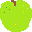lemon.pngstrawberry.png
Then add the following code before the draw() function which creates a list that
contains an Actor for each of the possible fruits we will display:
fruits = [
Actor('apple', (WIDTH / 2, HEIGHT / 2)),
Actor('lemon', (WIDTH / 2, HEIGHT / 2)),
Actor('strawberry', (WIDTH / 2, HEIGHT / 2)),
]
fruit = None
The fruit variable which is currently set to the special value None is used to
indicate which fruit we are currently displaying. When fruit is None it means
that no fruit is to be displayed. When fruit is an Actor then it is to be
displayed. Change the draw() function to read as follows to ensure fruit gets
drawn each frame when it is a value other than None:
def draw():
screen.clear()
screen.draw.text(f"{score}", (WIDTH / 2, 15), color="red", fontsize=24)
for i in range(lives):
screen.blit('muncher', (5 + (37 * i), 5))
muncher.animate()
muncher.draw()
for ghost in ghosts:
ghost.animate()
ghost.draw()
for wall in walls:
wall.draw()
for pellet in pellets:
pellet.draw()
if fruit is not None:
fruit.draw()
Now run your game to check it out. Does the fruit get displayed? Why do you think this is?
Extension: More fruits please
Having 3 different fruits adds some variety but Muncher likes a whole lot of different types
of fruit. Use your artistic talent to create more fruits. Don't forget to add them to the
fruits list. Some examples of fruits to draw are:
- Banana
- Pineapple
- Cherries
- Kiwi
- Peach
- Grapes
Step 17: Showing and hiding the fruit
Presently, when the game is running, the fruits do not appear. This is because there is no
code that currently changes the fruit variable from the value None. What we want is for
a fruit to appear every five second and be displayed for 3 seconds. This should make it
challenging for Muncher to get the fruit whilst also avoiding the ghosts. To achieve this we
are going to use the clock.schedule() method that we used earlier. The method
clock.schedule() is used to schedule a function to be called a number of seconds in the
future. We will schedule a call pick a random fruit from the list to show and then schedule
another different call to hide that fruit.
Add the following code before the draw() function:
def show_fruit():
import random
global fruit
fruit = fruits[random.randint(0, len(fruits) - 1)]
clock.schedule(hide_fruit, 3)
def hide_fruit():
global fruit
fruit = None
clock.schedule(show_fruit, 5)
clock.schedule(show_fruit, 5)
Run your program. Now your fruits will show and hide. What happens when Muncher touches the fruit? Why do you think that is?
Experiment: Changing how often the fruits are visible
Try adjusting the specified number of seconds that the three calls to clock.schedule() to see how
this affects the game. The three values represent:
- The time to wait for the first fruit being shown.
- The time that each fruit is displayed for.
- The time between each fruit being displayed.
Which value is which? Select some values that you feel are best for your game.
Step 18: Eating the fruits
At present, when Muncher overlaps with the fruit, nothing happens. This is because we have not added the collision detection code like has been done for the pellets, ghosts and walls.
Modify the update function so that it checks for the collision between Muncher and the
fruit and awards points based on the index of the fruit in the list. The first item will
be worth 1,000 points, the second item 2,000, the third item 3,000 points and so on.
global fruit
if fruit is not None:
if fruit.colliderect(muncher):
index = fruits.index(fruit) + 1
score += (1000 * index)
fruit = None
Run your game and try it out.
Experiment: Fruits in different places
All of the fruits currently appear in the same location no the screen. Why do you think this is? Try changing your code so that different fruits appear in different locations.
Step 19: Getting additional lives
An additional life should be awarded for each 10,000 points the player scores.
Add the following code above your draw() function:
next_life = 10000
Modify the update function by adding the code below that checks to see when the next
life should be awarded.
global next_life
if score >= next_life:
lives += 1
next_life += 10000
Experiment: Changing the way extra lives are awarded
The code currently awards a new life every 10,000 points. Try changing it so that a life is awarded after the first 1,000 points and then every 2,000 points thereafter.
What happens when you get lots and lots of lives?
Try modifying the code so that you award lives in the following pattern:
- 1st new life awarded after 10,000 points (10,000)
- 2nd new life awarded after 30,000 points (10,000 + 20,000)
- 3rd new life awarded after 60,000 points (10,000 + 20,000 + 30,000)
- 4th new life awarded after 100,000 points (10,000 + 20,000 + 30,000 + 40,000)
- ... and so on ...
Step 20: Power pellets
Each time Muncher eats a power pellet, it supercharges Muncher and allows him to eat the ghosts for a few seconds. The power pellet is a larger 16 x 16 pixel pellet. You can create your own using whatever colour you like, or use mine.
The image for the power pellet should be placed in the images folder you already
created and be called:
power-pellet.png
We will use the same pattern for creating the power pellets, drawing them and performing collision detection as has been used for the smaller pellets. You should be familiar with these patterns by now.
Add the following code before the create_pellets() function which will create the
list to hold the power pellets and add a property to Muncher to indicate how long he
has left (in seconds) in power mode:
power_pellets = []
muncher.power = 0
Add the following code to the create_pellets() function which will create the power
pellets for each new level:
global power_pellets
power_pellets = [
Actor('power-pellet', (WIDTH / 5, HEIGHT / 6)),
Actor('power-pellet', ((WIDTH / 5) * 4, HEIGHT / 6)),
]
Add the following code to the draw() function to display the power pellets
each frame:
for pellet in power_pellets:
pellet.draw()
Add the following code to the update() function. This code first decreases how much
time Muncher has left in power mode and then detects for collision between Muncher and
the power pellets, granting Muncher a 500 point bonus and more time in power mode if
one or more power pellets were eaten:
muncher.power -= dt
if muncher.power < 0:
muncher.power = 0
global power_pellets
before = len(power_pellets)
power_pellets = [pellet for pellet in power_pellets if not pellet.colliderect(muncher)]
after = len(power_pellets)
score += (before - after) * 500
if after < before:
muncher.power = 5
Experiment: Changing the number of power pellets
Currently the game has two power pellets. Why not add some more power pellets to the game. You could go for four with one in each corner or perhaps place then extra ones in random positions. Experiment with different placings to get something you like.
Step 21: Power mode and frightened ghosts
When you run your game, there is no indication that Muncher is in power mode. In fact even in power mode, Muncher will still lose a life if he touches the ghosts. We need to do the following things:
- Make the ghosts change their look so it is clear that power mode is activated
- Stop Muncher losing a life when colliding with a ghost in power mode.
- Award Muncher 500 bonus points when colliding with a ghost in power mode and move the ghost back to its starting position.
Either draw your own 32 x 32 pixel scared ghost images using your favourite paint
program or use my images below. The two scared ghost images should be placed in
the images folder you already created and be called:
ghost-scared.png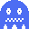ghost-scared2.png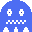
Add the following code before the draw() function which will create a list for
the scared ghost images:
scared_images = ['ghost-scared', 'ghost-scared2']
Add the following code to the end of your update() function. This will swap the
images used for each ghost Actor based on whether Muncher is in power mode or note:
global scared_images
if muncher.power > 0:
for ghost in ghosts:
if ghost.images != scared_images:
ghost.original_images = ghost.images
ghost.images = scared_images
ghost.frame = 0
else:
for ghost in ghosts:
if ghost.images == scared_images:
ghost.images = ghost.original_images
ghost.frame = 0
If you run your program now you will find the ghosts change their look when you eat a power pellet. The only item remaining is to modify the collision detection code.
In your update() function, locate the code that checks the collision between Muncher
and the ghosts. It will look like this:
for ghost in ghosts:
if ghost.colliderect(muncher):
lives -= 1
paused = True
clock.schedule(reset_actors, 2)
Change it to this which will stop this collision detection happening if Muncher is in power mode:
if muncher.power <= 0:
for ghost in ghosts:
if ghost.colliderect(muncher):
lives -= 1
paused = True
clock.schedule(reset_actors, 2)
Now to add the code that allows Muncher to each the ghosts. Add this code to the end
of your update() function:
if muncher.power > 0:
for ghost in ghosts:
if ghost.colliderect(muncher):
score += 500
ghost.pos = GHOST_START
Extension: Frightened ghosts should run away
Presently, when Muncher has eaten a power pellet, the ghosts do not change their behaviour. The ghosts moving randomly continue to do so and the ghosts chasing also continue to do so. Change your chase code so that you rather than chase towards Muncher a chasing ghost runs away when Muncher is in power mode.
Step 22: Adding sounds
You game is fun, but it is lacking something. Sound! You can create your own sound effects or use some free online resources. All of the sound effects listed here came from MixKit. Other sites are available such as pixabay.
Create a sounds folder in your project to place your sound files. You will need
6 sounds:
Playing a sound is super easy using the sounds object. To play the lose_life.wav
sound, just use this code.
sounds.lose_life.play()
All of the sounds need adding to the update() function which should now look
like this:
def update(dt):
global lives, paused
if paused:
return
if keyboard.left:
muncher.x -= muncher.vx * dt
if keyboard.right:
muncher.x += muncher.vx * dt
if keyboard.up:
muncher.y -= muncher.vy * dt
if keyboard.down:
muncher.y += muncher.vy * dt
muncher.keep_in_bounds()
for ghost in ghosts:
ghost.move(dt)
ghost.keep_in_bounds()
if muncher.power <= 0:
for ghost in ghosts:
if ghost.colliderect(muncher):
lives -= 1
sounds.lose_life.play()
paused = True
clock.schedule(reset_actors, 2)
check_for_wall_collisions(muncher)
global score, pellets
before = len(pellets)
pellets = [pellet for pellet in pellets if not pellet.colliderect(muncher)]
after = len(pellets)
score += (before - after) * 100
if after < before:
sounds.eat_pellet.play()
if len(pellets) <= 0:
paused = True
sounds.new_level.play()
create_pellets()
reset_actors()
global fruit
if fruit is not None:
if fruit.colliderect(muncher):
sounds.eat_fruit.play()
index = fruits.index(fruit) + 1
score += (1000 * index)
fruit = None
global next_life
if score >= next_life:
sounds.new_life.play()
lives += 1
next_life += 10000
muncher.power -= dt
if muncher.power < 0:
muncher.power = 0
global power_pellets
before = len(power_pellets)
power_pellets = [pellet for pellet in power_pellets if not pellet.colliderect(muncher)]
after = len(power_pellets)
score += (before - after) * 500
if after < before:
muncher.power = 5
global scared_images
if muncher.power > 0:
for ghost in ghosts:
if ghost.images != scared_images:
ghost.original_images = ghost.images
ghost.images = scared_images
ghost.frame = 0
else:
for ghost in ghosts:
if ghost.images == scared_images:
ghost.images = ghost.original_images
ghost.frame = 0
if muncher.power > 0:
for ghost in ghosts:
if ghost.colliderect(muncher):
sounds.eat_ghost.play()
score += 500
ghost.pos = GHOST_START
Extension: Add a special sound when a power pellet is eaten
There is currently no special sound played when a power pellet is eaten. Create or
choose a sound, add it to your sounds directory, then add the code to play the
sound when a power pellet is eaten.
Extension: Frightened ghosts sound
Extend your game to play a background melody when the ghosts are frightened.
Appendix A: Finished code
Here is a version of the finished code with some of the extensions completed: main.py
You can see the completed game on Replit.